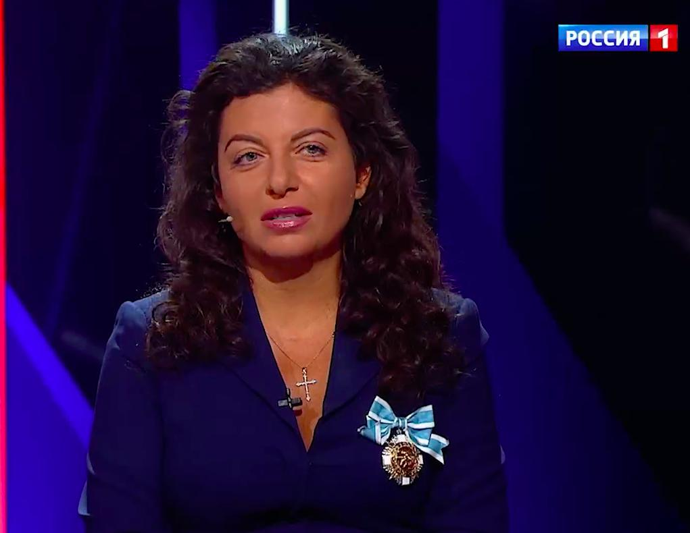

«Если будет война России с Западом —
я буду на стороне России»

Маргарита Симоньян — главный редактор RT (Russia Today) с момента основания канала в 2005 году. Назначена Кремлём в возрасте 25 лет. Под её руководством RT вырос в глобальный инструмент контрнарратива, вещающий на 100+ стран. Армянского происхождения. Замужем за режиссёром и пропагандистом Тиграном Кеосаяном.
Родилась 6 апреля 1980 года в Краснодаре. Армянского происхождения — предки переехали в Краснодар в советское время. В детстве серьёзно занималась художественной гимнастикой. Получила диплом журналиста в Кубанском государственном университете.
В 2003 году, ещё будучи студенткой, работала в пресс-пуле Путина как журналист регионального издания. Освещала президентские поездки. Произвела впечатление на кремлёвских чиновников профессионализмом и лояльностью. Это знакомство стало стартовой точкой её карьеры.
В 2005 году Кремль создал Russia Today — первый государственный международный новостной телеканал. Симоньян назначена главным редактором в 25 лет. Вероятно, самый молодой главред международного новостного канала в мире на тот момент. Задача: противостоять «западному нарративу».
Russia Today переименован в RT. Аудитория выросла до 700+ млн человек в 100+ странах. Появились версии на арабском и испанском языках. RT активно освоил YouTube и соцсети — стал заметным международным игроком, особенно в среде западной аудитории, скептически настроенной к своим СМИ.
Симоньян стала также главным редактором МИА «Россия сегодня» — гигантской государственной медиагруппы, созданной на базе РИА Новости. Теперь под её контролем оказалась крупнейшая сеть государственных СМИ России. Гендиректором «России сегодня» был назначен Киселёв.
Под давлением Министерства юстиции США RT America была обязана зарегистрироваться как «иностранный агент». Симоньян объявила это «информационной войной» и добилась симметричного ответа: BBC, Deutsche Welle и «Голос Америки» получили статус иноагентов в России.
После вторжения в Украину RT заблокирован в большинстве европейских стран, закрыты офисы в Лондоне и Берлине. Симоньян стала одним из главных голосов, оправдывавших войну. Попала под персональные санкции ЕС, США, Великобритании, Канады, Австралии, Японии. Факт
Сентябрь 2024 — Министерство юстиции США обвиняет двух сотрудников RT в финансировании американских правых инфлюенсеров через подставную компанию Tenet Media на ~$10 млн. Цель: скрытое распространение российских нарративов в американских соцсетях без видимой связи с RT. Симоньян отрицает всё: «Это охота на ведьм. RT — журналистика». Государственный департамент США официально квалифицирует RT как «подразделение разведки». RT внесён в список иностранных агентов влияния — наравне со спецслужбами. Победу Трампа Симоньян встречает в Telegram: «Теперь можно выдохнуть».
К 2025 году RT закрыт или ограничен более чем в 40 государствах. Симоньян адаптирует стратегию: финансирование контента через посредников без брендинга RT («белый лейбл»), активная работа в Telegram и YouTube. Схема, выявленная в деле Tenet Media, становится шаблоном. Западные исследователи дезинформации фиксируют: Симоньян — единственный медийный руководитель в мире, продолжающий работу после уголовного обвинения своих сотрудников в иностранном вмешательстве.
Симоньян — мастер провокационных заявлений. Её цитаты становились скандалами как на Западе, так и внутри России.
«Если будет война между Россией и Западом — я буду на стороне России. Я здесь родилась, здесь живу и здесь умру.»
«Нет никакой объективной журналистики. Вопрос только в том, чьи интересы вы защищаете.»
«Мы не воюем с украинцами. Мы воюем с тем нацистским режимом, который превратил их в пушечное мясо.»
«RT не скрывает своей позиции. В отличие от западных медиа, которые притворяются объективными — и лгут.»
Симоньян — самый молодой руководитель крупнейшего международного пропагандистского органа в истории. Армянка, ставшая голосом русского национализма. Журналист, отрицающий существование независимой журналистики.
Симоньян — армянского происхождения. При этом стала одним из главных идеологов «Русского мира» — концепции, основанной на русском культурном доминировании. Не видит противоречия: «Я русская в первую очередь по духу».
RT позиционирует себя борцом против «западной цензуры». При этом финансируется из госбюджета РФ, работает под госконтролем и никогда не публиковал критику Путина. Сам Путин называл RT «пропагандистским инструментом». Интерпр.
После принудительной регистрации RT в США Симоньян потребовала ответных мер — и добилась: BBC, Deutsche Welle и «Голос Америки» получили статус иноагентов в России. Инструмент, который её возмущал, стал её оружием.
Одна из самых влиятельных женщин-руководителей в российских медиа, сделала карьеру в 25 лет. При этом RT и «Россия сегодня» активно продвигают патриархальные ценности, антифеминизм и антилиберальную повестку по всему миру.
«RT — инструмент информационной войны. Симоньян — её главнокомандующий.»
«Она превратила RT в глобальную платформу для кремлёвской дезинформации, охватывающую 100+ стран.»
«Самый эффективный пропагандист Кремля — потому что говорит на языке, понятном Западу.»
«RT — классический канал для продвижения теорий заговора, отрицания климата и антивакцинаторства на Западе.»
«Она создала новую модель госмедиа: не советская «Правда», а глянцевый «антиэстеблишментный» продукт.»
До 2022 года Симоньян регулярно давала интервью западным изданиям. Темы повторялись. Она отвечала агрессивно и уверенно.
Все утверждения в данном досье основаны на открытых публичных источниках. Факты, отмеченные Факт, имеют прямые первичные источники. Отмеченные Интерпр. — авторская интерпретация задокументированных событий.